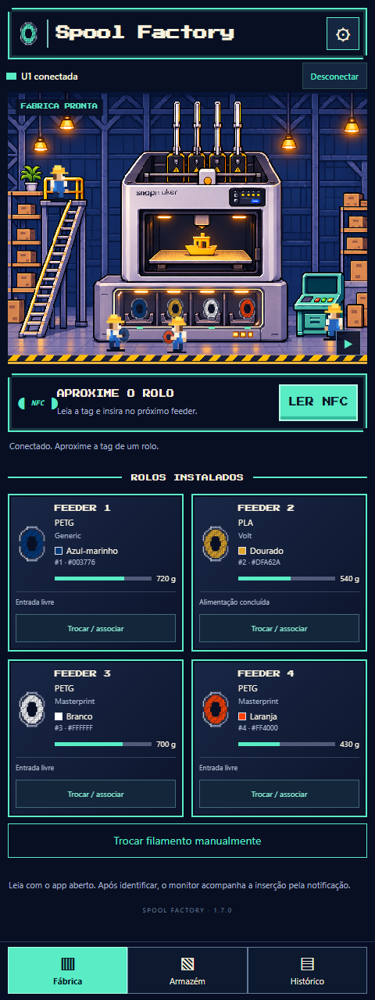

Leia e insira
O celular identifica o UID cadastrado no Spoolman. O app observa a nova inserção e confirma a associação após a alimentação.
Aproxime a tag e insira o filamento. O próximo feeder ativado recebe o rolo certo.
Um leitor NFC externo para sua Snapmaker U1, com estoque Spoolman, troca manual e uma pequena fábrica em pixel art.
v1.3.0 beta · Sem conta no app · Sem anúncios
Requer U1 com PAXX12 + SpoolLink e seu Spoolman.

O celular identifica o UID cadastrado no Spoolman. O app observa a nova inserção e confirma a associação após a alimentação.
Material, marca, cores e saldo disponível. Sem dados? A tela informa a ausência, em vez de inventar um rolo branco.
Escolha rolo e feeder. Associe, carregue ou retire com confirmação. Comandos físicos ficam bloqueados durante impressão e pausa.
Baixe no celular, abra o arquivo e autorize a instalação pelo seu navegador ou gerenciador.
Na primeira abertura, configure o IP da U1 e o endereço do Spoolman. Inclua a porta quando necessário e as chaves de API, se exigidas.
Use Testar → Salvar → Conectar. Ative o NFC para ler tags e permita a notificação do monitor.
Aguarde a identificação no app, insira em um feeder livre e espere a confirmação. A engrenagem reabre as configurações.
Não. É necessário PAXX12 Extended Firmware com SpoolLink e as interfaces de leitor externo compatíveis. O desenvolvimento usou a série 2.0.0-paxx12-24. Consulte a documentação do repositório antes de instalar.
Não é necessário root nem leitor USB. Tailscale é opcional: o celular só precisa alcançar sua U1 e seu Spoolman. Na mesma rede Wi-Fi, use os endereços locais. Para VPN/Tailscale, configure seus próprios dispositivos separadamente.
Ele lê o UID e procura o rolo já cadastrado no Spoolman. Não grava tags nem transfere sua identidade entre cadastros. Cadastre as tags primeiro em uma ferramenta compatível com o campo card_uids.
Os controles manuais desta versão ficam bloqueados durante impressão e pausa, além de erros e outras operações. Carregar/retirar podem aquecer e movimentar a U1 e pedem confirmação. O novo controle físico ainda precisa de validação mais ampla em hardware.
Não há conta do app, anúncios ou telemetria do desenvolvedor. O celular conversa com os endereços configurados por você. Configurações, cache e histórico ficam no aparelho. Diagnósticos só são compartilhados quando você usa a ação de compartilhar; revise-os antes de publicar.
É uma beta pública inicial. Há testes automatizados de lógica, integração simulada e interface; a associação NFC foi usada em um Galaxy Z Fold7. Outros aparelhos, versões de firmware e os novos comandos físicos precisam de validação. Se encontrar um problema, abra uma issue sem incluir dados privados.